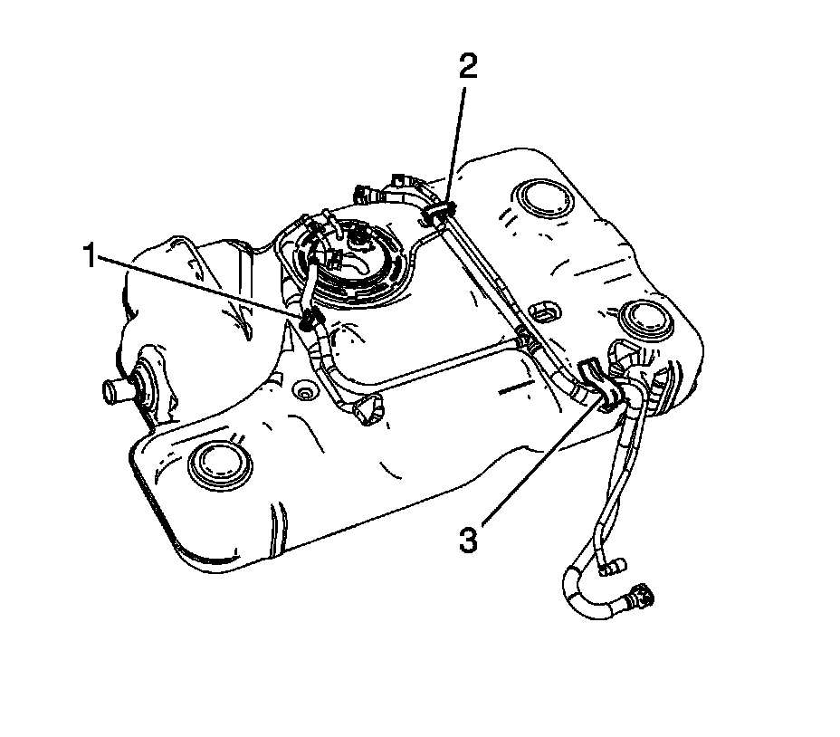
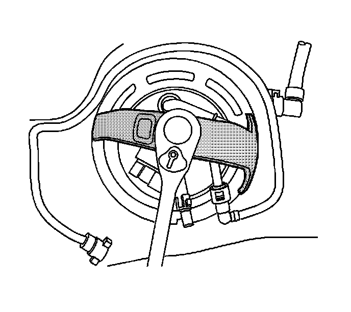
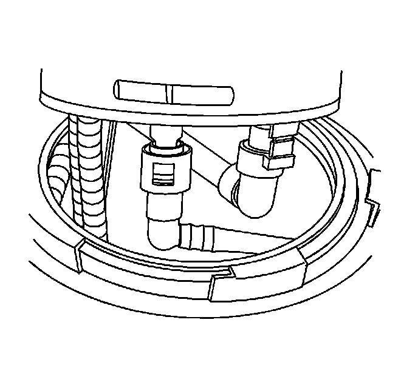
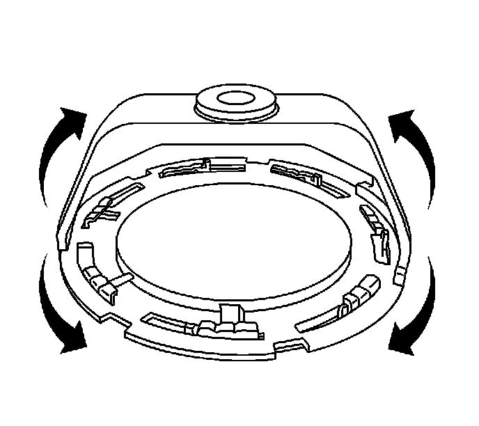

Fuel Tank Replacement (2500 LWB - 43.5L (11.5 Gal) Tank-Rear)
FUEL TANK REPLACEMENT (2500 LWB - 43.5L (11.5 gal) TANK-REAR)
REMOVAL PROCEDURE
IMPORTANT: Clean all fuel and evaporative emission (EVAP) line connections and surrounding areas prior to disconnecting the lines in order to avoid possible fuel and/or EVAP system contamination.
1. Relieve the fuel system pressure. Refer to the Fuel Pressure Relief.
2. Remove the spare tire stowage lock cylinder.
3. Remove the spare tire.
4. Drain the fuel tank. Refer to Fuel Tank Draining (Dual Tanks - Front) Fuel Tank Draining (Dual Tanks - Rear) Fuel Tank Draining (Single Tank).
5. Remove the rear exhaust insulator.

6. Remove the spare tire hoist crossmember bolts and crossmember.

7. Disconnect the rear fuel tank EVAP line quick connect fittings from the EVAP canister.
8. Disconnect the fuel and EVAP intermediate line quick connect fittings from the front tank.
9. Disconnect the chassis harness electrical connector (1) from the fuel pressure sensor.

10. Support the fuel tank with a suitable jack.
11. Remove the fuel tank strap bolts.
NOTE: Refer to Damage to Fuel Tank Straps Notice.
12. Remove the fuel tank straps.
13. With the aid of an assistant, lower the rear tank until the intermediate line connections can be reached.
14. Disconnect the fuel and EVAP intermediate line quick connect fittings from the rear tank.
15. Remove the fuel and EVAP intermediate lines.
16. Cap the fuel and EVAP lines in order to prevent possible EVAP/fuel system contamination.
17. Disconnect the chassis harness electrical connector (2) from the fuel tank module.
18. Completely lower the fuel tank.
19. With the aid of an assistant, remove the tank from the jack.
20. If replacing the fuel tank proceed to the next step, otherwise proceed to step 14 in the installation procedure.

21. Remove the EVAP line from the clip (1) on the fuel tank.
22. Open the EVAP line clip (2) and remove the EVAP line from the clip.
23. Remove the EVAP lines from the clip (3).
24. Disconnect the EVAP line quick connect fittings from the fuel tank module.

25. Remove the EVAP lines from the fuel tank.

26. Using the J 45722, remove the lock ring.

27. Carefully lift the module from the fuel tank, enough to access the quick connect fitting under the module cover. Disconnect the quick connect fitting.
28. Remove the fuel tank module.
29. Remove and discard the fuel tank module seal.
30. IMPORTANT:
- Some lock rings were manufactured with "DO NOT REUSE" stamped into them. These lock rings may be reused if they are not damaged or warped.
- Inspect the lock ring for damage due to improper removal or installation procedures. If damage is found, install a NEW lock ring.
- Check the lock ring for flatness.

Place the lock ring on a flat surface. Measure the clearance between the lock ring and the flat surface using a feeler gage at 7 points.
31. If warpage is less than 0.41 mm (0.016 in), the lock ring does not require replacement.
32. If warpage is greater than 0.41 mm (0.016 in), the lock ring must be replaced.
INSTALLATION PROCEDURE
1. If the fuel tank was replaced perform the following steps, otherwise proceed to step 14.
2. Install the NEW fuel tank module seal onto the fuel tank.
3. Pull the vent line in the fuel tank up as far as possible for ease of installation.
4. Position the fuel tank module part way into the fuel tank.
5. Connect the quick connect fittings to the module cover.
6. Install the fuel tank module into the fuel tank.
7. Place the lock ring into position.

8. Rotate the lock ring counterclockwise using the J 45722.
9. Install the EVAP lines to the fuel tank.
10. Connect the EVAP line quick connect fittings to the fuel tank module.
11. Install the EVAP lines to the clip (3).
12. Install the EVAP line to the clip (2) and close the clip.
13. Install the EVAP line to the clip (1) on the fuel tank.
14. With the aid of an assistant, install the tank onto the jack.
15. Partially raise the fuel tank.
16. Connect the chassis harness electrical connector (2) to the fuel tank module.
17. Remove the caps from the fuel and EVAP lines.
18. Install the fuel and EVAP intermediate lines.
19. Connect the fuel and EVAP intermediate lines to the rear tank.
20. With the aid of an assistant, completely raise the rear tank.
21. Install the fuel tank straps.
22. NOTE: Refer to Fastener Notice.
Install the fuel tank strap bolts.
Tighten the bolts to 40 N.m (30 lb ft).
23. Remove the adjustable jack from under the fuel tank.
24. Connect the chassis harness electrical connector (1) to the fuel pressure sensor.
25. Connect the fuel and EVAP intermediate line quick connect fittings to the front tank.
26. Connect the rear fuel tank EVAP line quick connect fittings to the EVAP canister.
27. Install the spare tire hoist crossmember and bolts.
Tighten the bolts to 50 N.m (37 lb ft).
28. Install the rear exhaust insulator.

29. Install the fuel fill hose (1, 3) to the fuel tank.
30. Tighten the fuel fill hose clamp (2) at the fuel tank.
Tighten the clamp to 2.5 N.m (22 lb in).
31. Lower the vehicle.
32. Install the spare tire.
33. Install the spare tire stowage lock cylinder.

34. Install the fuel tank filler housing.
35. Install the fuel tank filler housing to fuel tank fill pipe bolts.
Tighten the bolts to 2.3 N.m (20 lb in).

36. Install the fuel tank filler housing to body TORX(R) screws (1) and retainer (2).
Tighten the screws to 2.3 N.m (20 lb in).
37. Refill the fuel tank.
38. Install the fuel fill cap.
39. Connect the negative battery cable.
40. Use the following procedure in order to inspect for leaks:
1. Turn the ignition ON, with the engine OFF, for 2 seconds.
2. Turn the ignition OFF for 10 seconds.
3. Turn the ignition ON, with the engine OFF.
4. Inspect for fuel leaks.
41. Install the intake manifold sight shield.